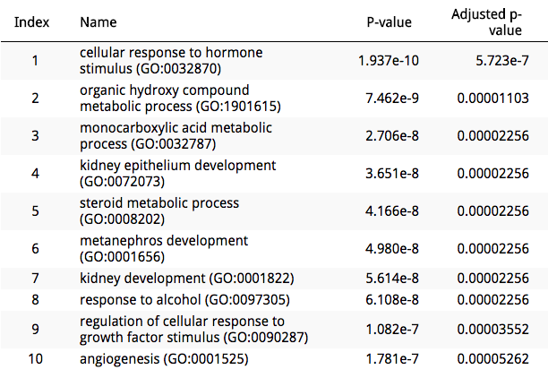
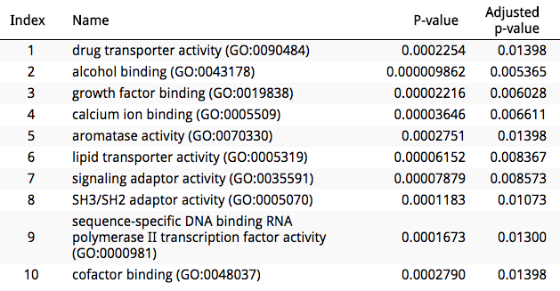
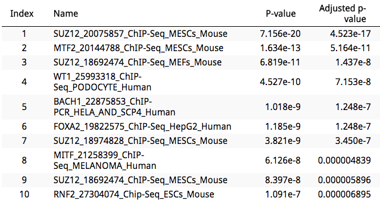
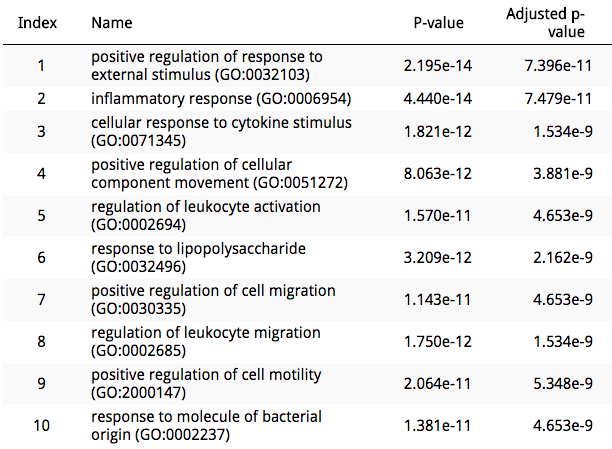
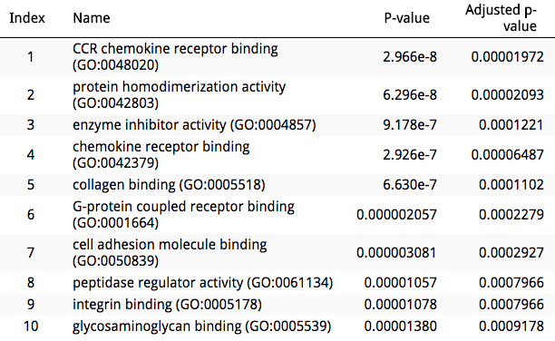
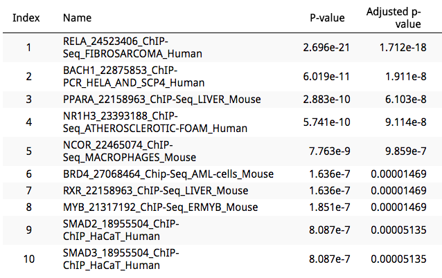

This notebook contains a preliminary computational analysis aimed at investigating the biological effect of BI-2536 treatment in cell lines. BI-2536 was previously identified as a candidate small molecule which capability to reverse gene expression signatures associated to diabetic nephropathy (Lin et al., 2016). For more information, please visit the diabetic nephropathy GEN3VA report page here.
In order to investigate the biological effect of BI-2536 treatment on cell lines, and its role in reversing diabetic nephropathy gene expression signatures, the following analysis was performed:
In order to identify the two genesets used for the enrichment analysis, each of the 13 reverse matches was independently queried to identify two genesets: the set of genes which are upregulated by the drug treatment and downregulated in the disease, and vice-versa. Subsequently, a count was performed in order to calculate how many times each gene appeared in each of these genesets.
Genes appearing in over 5 matches were selected for analysis. Results below:
%%htmlIn order to better characterize the biological role of these genesets, an enrichment analysis was performed using Enrichr.
The following is a summary of the enrichment results for the geneset. Full results here.
GO Biological Process
GO Molecular Function
ChEA
The following is a summary of the enrichment results for the geneset. Full results here.
GO Biological Process
GO Molecular Function
ChEA
